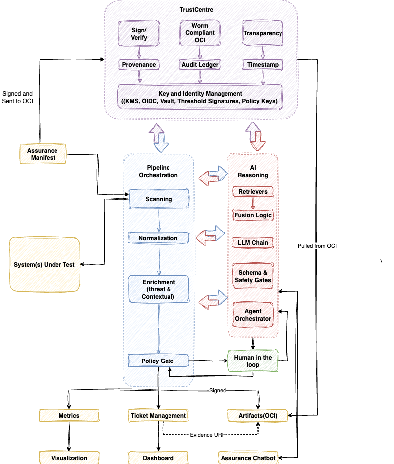

Proof of Concept
Although the focus of this project is on building a framework and ontological foundation, it is still important to have a prescriptive Proof of Concept (PoC) to keep us centered in reality. This PoC demonstrates how the framework can operate end-to-end using real open-source components. It serves as both an example implementation and a validation environment for the trust and assurance lifecycle.
Below is the stack we will use. It is not the only way , but a reference design that others can build upon, extend, or replace with their preferred technologies. Admittedly, this PoC is necessarily complex and our future goal would be to build a much simpler system that anyone could deploy and use.
We strongly recommend that you review the entire framework before delving deep into the PoC!
Click to view Architecture

Reference Implementation Overview Infrastructure and Development Stack
Category Tooling / Technology
Purpose
Language Runtime Python 3.12
Core runtime for assurance services, pipelines, and agents.
Application Framework FastAPI
Lightweight async framework for APIs and service orchestration.
Dependency Management Poetry
Manages Python dependencies and virtual environments.
Containerization Docker / Podman / Colima (macOS)
Builds isolated, reproducible dev and runtime environments.
Container Runtime containerd / CRI-O
Executes containers within Tekton / Kubernetes nodes.
Orchestration Kubernetes / Kind (local)
Manages workloads and simulates production assurance clusters locally.
Workflow Execution Tekton Pipelines
Executes multi-stage CI/CD and assurance workflows in-cluster.
Image Builders (in-cluster) Kaniko / Buildpacks / Buildah
Builds container images in Tekton without requiring Docker daemons.
Local Development Dev Containers / VS Code
Provides reproducible, containerized developer environments.
GPU Cloud / Hybrid Compute Runpod
On-demand GPU instances for large-model inference, fine-tuning, or evaluation tasks.
Registry & Artifacts Harbor (OCI, WORM mode)
Stores signed, immutable assurance artifacts and container images.
Networking / Ingress Traefik
Routes and secures ingress traffic for PoC services.
Secrets & Identity Vault / OIDC / Sigstore keyless
Manages credentials, identity tokens, and signing keys for assurance trust.
Observability Prometheus + Grafana
Monitors assurance metrics, pipeline health, and runtime performance.
Logging & Tracing Loki + OpenTelemetry
Collects logs and traces across distributed assurance components.
Storage MinIO / LocalStack S3
Provides cloud-style object storage for assurance data, evidence, and logs.
CI/CD Integration GitHub Actions / GitLab CI/CD
Triggers Tekton pipelines on commits or policy updates.
Supply-Chain Attestation Tekton Chains + Cosign
Signs and verifies provenance for builds and assurance artifacts.
AI Technology Stack
Layer Implementation
Purpose
Model Runtime (Local) Ollama (Llama 3.1 8B / Qwen 2.5 7B)
Local inference for reasoning and assurance generation loops.
Model Runtime (Cloud / Hybrid) Runpod Inference Pods
Offloads heavy models (e.g., Mixtral 8×7B, Llama 70B) for parallel or long-context evaluation.
RAG / Orchestration Haystack 2 Pipelines
Retrieval → Generation → Post-Processing workflows.
Embeddings Sentence-Transformers
Dense retrieval, reranking, and semantic similarity.
Data Privacy Presidio
PII redaction and masking within AI data flows.
Config & Schema Pydantic / JSON Schema
Typed I/O contracts and config validation.
Storage / Artifacts Local FS / S3 (LocalStack)
Persists corpora, indexes, and model run artifacts.
Trust Centre Technology Stack
Function / Layer Implementation Purpose
Trust Primitives Sigstore (Cosign, Rekor), RFC 3161
Signing, timestamping, transparency-log provenance.
Policy Engine Open Policy Agent (OPA) / CUE
Policy-as-code evaluation and decisions.
Identity & Key Mgmt OIDC, GPG, keyless Sigstore
AuthN/Z and non-repudiation for actors and artifacts.
Evidence Registry Harbor (OCI, WORM)
Immutable storage of signed assurance artifacts and logs.
(Optional) Orchestration Tekton (primary), Dagger (local prototyping optional)
Pipeline execution; Dagger optional if you still want local proto flows.
Core Assurance Operations
Function / Layer Implementation Purpose
Security Scanning Trivy, Semgrep, Syft/Grype, OpenGrep, Gitleaks
Detect vulnerabilities, misconfigurations, secrets, and SBOM drift.
AI Assurance (Behavior & XAI) Haystack + Presidio + Ollama + DeepEval + LIME/SHAP/Captum
Evaluate behavior, bias, safety drift; explain model reasoning.
Traditional Software Testing pytest, k6, Playwright, Postman
Functional, performance, and integration testing.
Normalization Layer Custom normalizer + JSON Schema + Pandera
Unify heterogeneous outputs into a common schema.
Fusion Logic Engine Python/Haystack + CUE/OPA rules
Correlate, enrich, and fuse findings across domains.
Policy-as-Code / Gating CUE + OPA
Enforce structured assurance logic; compute pass/fail outcomes.
Schema & Safety Engine Pydantic + JSON Schema
Validate outputs against format and safety constraints.
Human-in-the-Loop OpenProject + JSON waivers
Traceable manual overrides and waiver governance.
Metrics & Visualization Prometheus + Grafana
Monitor KPIs, pipeline health, reasoning metrics.
Audit & Evidence Ledger Rekor + Evidence URIs
Immutable provenance and end-to-end traceability.
Category Tooling Purpose
Behavioral Metrics DeepEval
Correctness/faithfulness/safety metrics.
Privacy & Safety Presidio (assurance mode)
Detect PII leakage and policy violations.
Explainability LIME / SHAP / Captum
Local/global interpretability of outputs.
Schema Validation Pydantic / JSON Schema
Enforce structured, predictable outputs.
Policy & Governance CUE / OPA
Pass/fail criteria across checks.
Evidence & Provenance Cosign / Rekor
Sign and log assurance reports and SBOMs.
Publication Harbor (OCI, WORM)
Immutable artifact storage for audits.
Observability Prometheus + Grafana
Drift and KPI dashboards.
Flow Summary
Run the Stack — The AI pipeline (Haystack + Ollama + Presidio) generates outputs and reasoning traces. Assure Outputs — DeepEval, LIME/SHAP/Captum, and schema checks validate safety, fairness, and structure. Policy Gate — CUE/OPA enforces trust and compliance rules; human overrides create signed waivers. Sign & Publish — Assurance artifacts are cryptographically signed and stored immutably in Harbor. Monitor & Iterate — Grafana visualizes model performance, drift, and safety compliance trends.